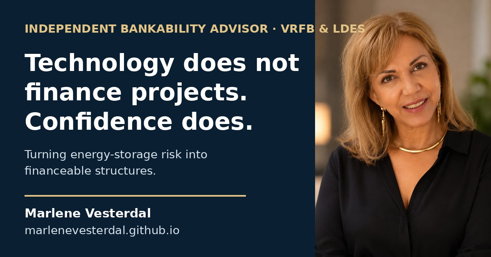

Evidence first
Technical claims must be translated into independently supportable evidence and practical protections.
My work focuses on the point where technical capability must become investment confidence.

Many emerging energy technologies are technically promising. Far fewer are presented in a way that investors, lenders and insurers can evaluate with confidence.
I work at the intersection of technology, finance, insurance and project development. My role is to identify where confidence breaks down, translate the risk, and clarify what must be evidenced, contracted, insured or restructured before capital can proceed.
This work is independent. I do not sell technology, represent a manufacturer or promote a transaction. The objective is to test whether the structure can withstand serious scrutiny.
Technical claims must be translated into independently supportable evidence and practical protections.
The analysis is not shaped by a technology sale, financing mandate or manufacturer affiliation.
The purpose is not to produce more information. It is to make the next decision clearer and better structured.
My perspective has been shaped by work across economics, investment, energy storage, project finance, insurance and industry dialogue.
My role is to connect disciplines that are often reviewed separately.
I do not replace engineering, legal, insurance or financial specialists. I identify where those disciplines must converge, where assumptions remain unsupported, and which questions must be resolved before a project can become financeable.
For paid advisory, independent reviews, investor-readiness work and strategic collaboration.